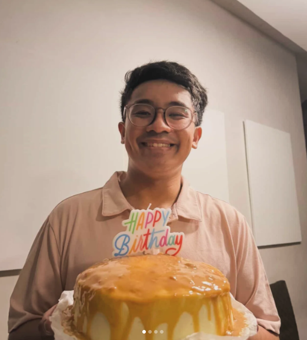
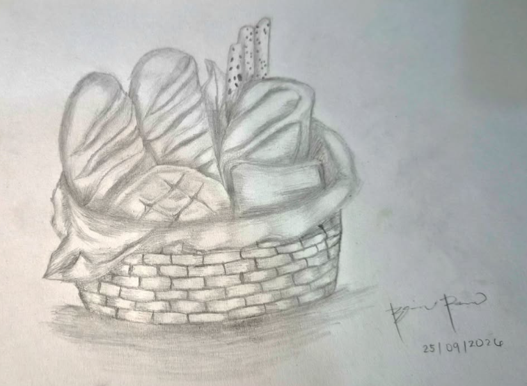
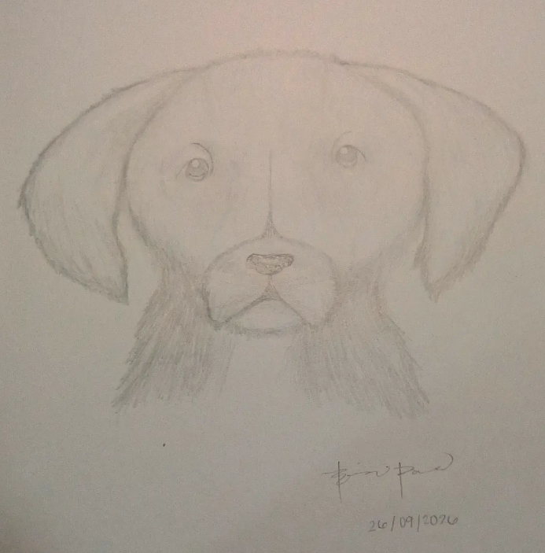

About Me
Kumusta ka? (How are you?) I am Brian Kostya Pama, a third-year Filipino university student majoring in BA in Multimedia Studies at University of the Philippines Open University. I am currently based in Imus City, Cavite, Philippines as a full-time student who is passionate about design and technology and how they impact our modern society. Aside from academics, I also invest time in my creative hobbies and interests.
Things I Love
- Baking and sharing my sweet treats
- Sketching
- Digital Art
- Learning foreign languages, I just started learning German in 2025.
- Watching YouTube documentaries, comedy sketches, and gameplays.
- Listening and dancing to local and international music genres.
- Kunekune Pigs
Skills & Tools
My Passion Project

White Chocolate Dulce De Leche Cake
I made this decadent cake for my brother's 24th birthday. The cake was made entirely from scratch, I made a white chocolate ganache and a dulce de leche drizzle on top. This is my first time making a birthday cake for someone.
Sketches


Future Projects
Here are some projects I'm planning to work on in the future:
- Baking an Ube Brigadeiro cake (2027).
- Developing a video game for my capstone project (2028).
- Painting a piece inspired by Scandinavian folk art (TBA).